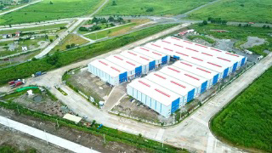

Laguna Technopark is a large industrial park in the Philippines, developed by AyalaLand Logistics Holdings Corp. (ALLHC), that houses a variety of light to medium, non-polluting manufacturing and logistics companies.
The AyalaLand Logistics Holdings Corp (ALLHC) Technoparks develops and manages dynamic industrial parks in the Philippines. Its pioneer development started in 1990 with Laguna Technopark. It has grown to cover 471 hectares across the cities of Biñan and Santa Rosa, It is one of the largest privately-owned industrial parks in the country based on the number of employment and revenues generated.
Laguna Technopark is significant not just as an economic zone, but as a catalyst for national development—providing jobs, attracting investment, promoting sustainability, and fostering innovation in regional economies. It is now home to more than 270 companies, generating over 100,000 jobs and contributing significantly to the CALABARZON region's economy.
Laguna Technopark stands as a testament to visionary industrial development in the Philippines. From its beginnings in 1990 as a 224-hectare project, it has grown into a 471-hectare hub that hosts over 270 companies and provides employment to more than 100,000 people. Spearheaded by Ayala Land, Mitsubishi Corporation, and Kawasaki Steel Corporation, and managed by AyalaLand Logistics Holdings Corp., it has become a cornerstone of economic progress in CALABARZON. As it continues to expand and evolve, Laguna Technopark exemplifies how sustainable, innovation-driven industrial parks can empower communities, support local and global businesses, and drive regional and national growth.